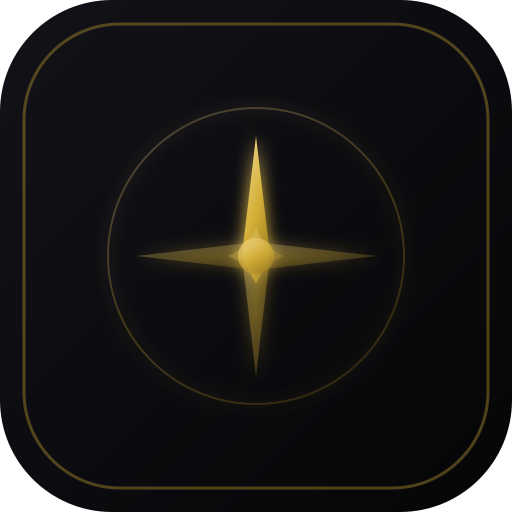
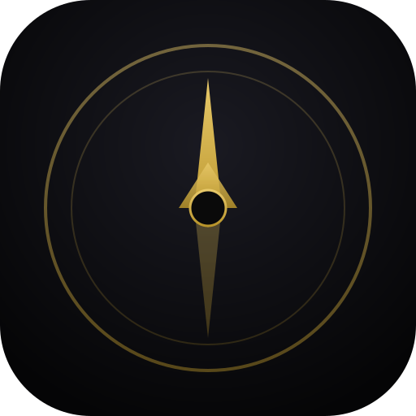
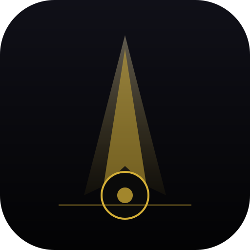

Ikonförslag
Välj ett ID per rad (t.ex. A2 · C1 · K3). Säg till i Cursor — då byter vi in i appen.
1 — Appikon (hemskärm)

A1 — I-stone
Obsidian + 4-spets ros

A2 — Pansar
Dubbel ring + nord

A3 — Fyren
Ljusstråle + bas
2 — Kompass (header + dock)
C1 — Nordsten
Minimalt — minst brus
C2 — Oktagon
8 riktningar, arkitektonisk
C3 — Lagring
Bågar + nord — arkiv
3 — Kompis (header höger)
K1 — Öga
Närvaro / lyssnar
K2 — Puls
Analyserar — lugn kurva
K3 — Sköldpunkt
Kognitiv sköld